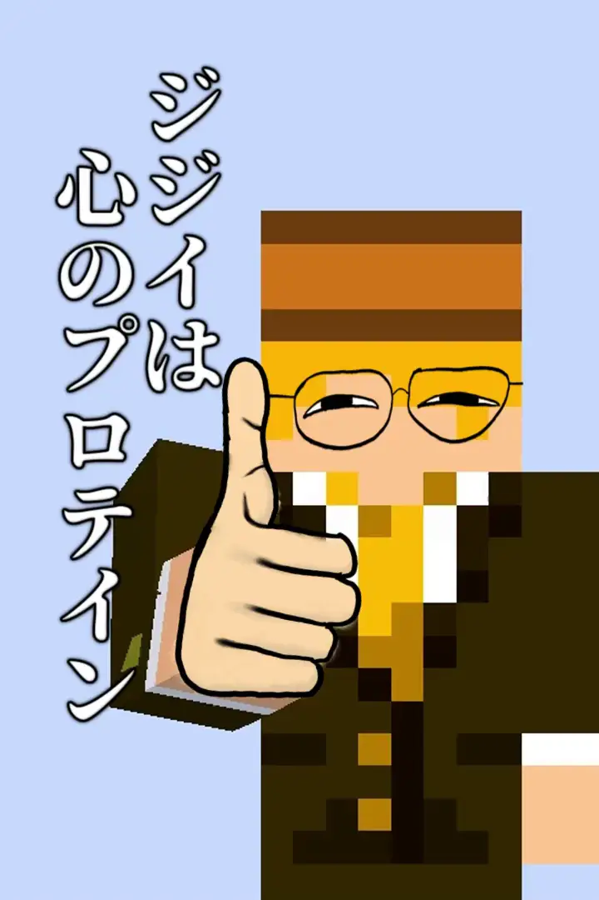

【老人】ジジイを満喫してみた
#日記
2024/11/20
銭湯に行こう
どうも、はちみつ(齢20)です。
今年で20歳になってしまった訳ですが、お酒も煙草も嗜まないものですからあまり20歳になった実感が湧かないのです。
しかも僕達はもう18歳の時点で成人しているので、余計なんも感じないんですね～
さて、そんなある日の土曜の深夜・・・というか日曜の午前2時くらい
友達と温泉に行こう！なんて話をしていて色々な温泉を調べているうちに、お風呂屋さんに行きたくなってしまいました。
中学の頃までは家族でスーパー銭湯に行ったりしてたのですが、高校辺りからすっかり行かなくなってしまって、よく行っていたスーパー銭湯ももう5年以上行っていませんでした。
思い立ったが吉日、好きだった思い出の銭湯に行こう！と思いながら眠りにつきました。
11時起床
なんやかんやで4時くらいまで友達と話してたせいで、かなり遅い時間に起きてしまいました。
日課の原神・ゼンゼロ・スターレイルを終わらせて(ミホヨの奴隷)、お昼ご飯を食べてから13時くらいに家を出発しました。
さて、そこではちみつさんは思いました。
ただ銭湯に行くだけで良いのだろうか？？？
銭湯とは言わば疲れを癒すために存在している場所。そんな所へついさっき起きた運動不足の若人がそのまま土足で上がっていいような場所なのだろうか！？否、そうではない！！！銭湯は神聖なる場所であり、その聖地へ入る為には試練を乗り越える必要があるのではないのか？？？
まぁとりあえず銭湯へ行く前に別の場所に行こう！と思ったのです。
公園に来た
なんやかんやで少し遠めの公園に来ました。
あ、ちなみにチャリで来てます。
この公園も、小学生の時以来訪れていなかった場所です。
昔はここまで車で来てたのに、チャリで来ちゃうなんて俺すげーなとか思いながら(ちなみに大した距離じゃないのでそんな凄くもない)、自転車を降りて歩いてみました。
結構歩いたなぁと思いながら地図を見つけたので見てみたんですがー・・・
ここ、記憶の10倍デカい。
※ちなみに上の絵は実際の地図じゃないです。
昔は人生初回ボーナスのお陰で体力無制限だったから色々走り回れたけど、ちゃんと歩いてみるとクソ広いんですよね。
これは意外な発見。これが分かっただけでも来た甲斐がありました。
公園の広さにびっくりしつつ、秋と冬の間のような季節なので、まだちょっとだけ紅葉がありました。
真面目に自然の景色を見るなんてもしかしたら今までしたこと無かったかもしれないけど、めっちゃ良い・・・。
自転車で行ける範囲だから写真載せられないけど、とりあえず凄く綺麗でした。
日曜だったこともあってか意外と人が多くて、僕が一人でぶらぶらしてても特に恥ずかしくもなんともなかったです。これ、僕みたいな小心者にとっては凄く重要な情報です
もちろん子供も多かったし、犬を散歩させてる人も沢山いました。
そういえば、猫ってあんまり公園で散歩させる人っていないよな・・・
ウチの猫はリード付けて家の周り散歩させたりするけど、流石に公園とかだと人多くてストレスになっちゃうのかな～？
みたいなどうでも良いことを考えながら、ひたすら歩いていました。
で、気付いたら公園の一番端まで来てました。
えぇ・・・いつの間にこんな所に来てたのサ・・・
入り口からここまで駐輪場を探しながら自転車を押して歩いていたんですが、結局見つからずにここまで来ちゃいました。
歩いてる途中で気づいたのですが、公園内で自転車を漕ぐのは大丈夫らしいので、帰りは自転車を漕いで戻ることにしました。
途中でクロスバイクのあんちゃんが音速で迫ってきてびっくりしたりー・・・
昼間なのに木の陰で真っ暗になってる道を見つけて「うおおおお！」って興奮しながら走ったりしました。あそこには多分トトロがいる
そんな感じで公園をかなり満喫して来ました。
ちなみに帰りはそうでも無かったけど、歩いてるときは「俺マジでジジイすぎるぜ・・・」とか思ってました。うぬぼれジジイ
で、かれこれ1～2時間くらい歩いてイイ感じに疲れも溜まって来たので、ようやく銭湯に向かいました。
スーパー銭湯はジジイの〇〇
久しぶりに来た。
ここも結構近い場所にあるスーパー銭湯なので、あんまり細かい事は言えないんですけど、ここめっちゃ雰囲気良いんです。
どう雰囲気がイイのかは言ったら一発で分かっちゃうので言えないです。ｽﾝﾏｾﾝ
時間は15時くらいで、マジでお年寄りばっかりでした。
子供の頃祖母と一緒に健康ランドへ行くこともよくあったので、意外とこの時間に外のお風呂に入った事もあります。ちなみにめっちゃ良い。
ただ、モチロン一人でスーパー銭湯に行くのは初めてだし、まして自分でお金を払うのも初めてなので、受付で若干あたふたしました。コミュ障の発作
とりあえずまずは風呂だ！って思って風呂に行こうと思ったんですがー・・・
なんか建物、小さい！！！
いや、そんなはずは・・・そんなはずは無いんですが、明らかに記憶より狭いんです。
たぶん、最後に行った時から随分デカくなったんだと思います。自分が。
まさかこんな所で自分の成長を感じられるなんて思わなかったぜ・・・
・・・ええと、気を取り直して風呂に入ります。
脱衣所にて。最近のコインロッカーはお金が戻ってこない事もあるので身構えてたんですが、そもそもコインロッカーじゃなくてただのロッカーでした。ありがたや・・・
ちなみに、はちみつさんはとんでもなく目が悪いので、お風呂に入るときは何も見えないです。
人生で初めてレーシックをしたいと思いました。
まずは室内の普通のお風呂に入ってから、外に出て色々入りました。
ここ結構特徴的な露天風呂があって面白いんですよね。
子供の時は絶対行かなかった寝そべる所で寝てみたりして、心の中では結構はしゃぎながらうろちょろしてました。全然ジジイじゃないね！
そして超久々のサウナ！！！
サウナは別に好きって程でも無いんですが、久々に入ってみました。
・・・
・・・・・・
・・・・・・・・・
あっつ～～～～～～～～い！！！！！！
ほんの3、4分で出てきちゃいました。いくじなし
それからいくつかまたお風呂に入って満足したのでもう出ることにしました。
お風呂あがりにはやっぱりコーヒー牛乳！！！
瓶入りのコーヒー牛乳はこのタイミングで飲むのが一番美味いですよね～
コーヒー牛乳を飲み終えた後、マッサージチェアを使ってみました。
今まで足だけの奴は使った事あるんですが、ここにあるのは全身マッサージ機。
恐る恐るスタートボタンを押してみたら・・・
ウワ！！！けっこう痛ぇ！！！
おまかせでやってみたんですが割と痛かったです。特に背中
逆に肩は全然痛くなくて、これってつまり肩がめっちゃ凝ってるって事なんでしょうか？？？
本当は中にある整体に行ってみたかったんですけど、整体って思ったより高くて今回は断念しました。いつか挑戦してみたい
体もほぐれた(?)ので、家族と行った時は何も食べずに帰るんですが、思い切ってアイスを頼んじゃいました。
結構いい値段したのでいつも買わない理由が分かりました。これが普通のソフトじゃなくてクレミアだったらなぁ・・・
ちなみに、ちゃんと美味しかったです。
あと、足湯もあるので最後に足湯に浸かりながらリラックスしました。
末端冷え性なので足湯があるとめっちゃ嬉しい。
足湯に浸かりながらふと思ったんですが・・・
スーパー銭湯って、ジジイのテーマパークじゃね？？？？？
もっとデカい所行ったら一日時間潰せちゃうよ？しかも超最高な一日！これってもうテーマパークと一緒だよね！？ジジイのテーマパークって事だよね？？？
最高の一日
終始ジジイだなぁとか思いながら過ごしはしたものの、ずっと楽しかった！！！
そんなことを思いながら18時くらいに家に帰るのでした。
てか、なんだかんだスーパー銭湯に2～3時間くらいいたのかよ・・・
結論としてはですね、「ジジイ最高！！！！！」でした。
よくよく考えてみたら、ジジイと若さを両方楽しめる今って激ヤバ最高無敵状態なんじゃね？って思いました。
これからも積極的にジジイを楽しみたいと思います。
ちなみに今は山に登りたい。
そんで帰りにまた違う銭湯に行きたい！！！
というわけで・・・
バイバイ！！！